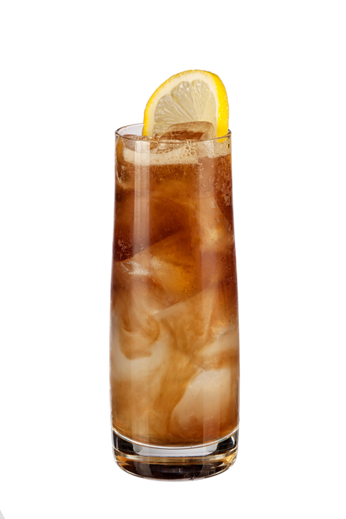

The Long Island Iced Tea

One of the most famous cocktails in the world, the Long Island Iced Tea is one of the most drunken cocktails in the modern day next to the margarita. This is a simple preparation of the classic Long Island Iced Tea
Kitchen Supplies Needed
- Cocktail Shaker
- Strainer
- Measuring Cup or Jigger
- A Drinking Glass
Ingredients Needed
- Ice
- 1 Oz. Gin
- 1 Oz. Tequila
- 1 Oz. Vodka
- 1 Oz. Rum
- 1 Oz. Triple Sec
- 1/2 Oz. Lemon Juice
- Coca Cola
Preparation Steps
- Using your measuring cup or jigger, measure and pour in an ounce of each spirit into your shaker tin
- Add in 1/2 an ounce of lemon juice preferably freshly squeezed
- Add in enough ice to fill the shaker to the top
- Put the cap of the shaker on and shake until the entire shaker is cold
- Strain the shaken cocktail into your drinking glass to avoid landing any seeds or shards or ice into the drink
- Top the drink off with coca cola to create the iced tea appearance